Sistema de información para estimar el potencial eléctrico y económico de la biomasa residual agrícola de la Argentina a escala departamental
Problema, objetivos y estado del arte
Cómo se desarrolló: fases, decisiones y validación
Visión general y cadena de cálculo
Extracción agrícola y de 28 cuadros tarifarios
Calidad, infraestructura, SSH, CI y tablero
Resultados, conclusiones y trabajo futuro
¿Cuánto rastrojo deja cada departamento, cuánta electricidad podría generar y cuánto dinero representaría para un productor?
Producción en portales del MAGyP y de bolsas de cereales; coeficientes en la bibliografía.
PDF, planillas, sitios dinámicos, API y hasta documentos escaneados.
Tarifas mensuales y campañas anuales: un cálculo manual envejece en semanas.
Diseñar, construir y operar un sistema de información que estime, por departamento, la biomasa residual agrícola, su energía eléctrica mediante gasificación y el beneficio bajo generación distribuida, a partir de fuentes públicas actualizadas automáticamente.
Residuo = P · (1 − IC)/IC, en base seca. Hay, 1995; Scarlat et al., 2010
Solo 30–50 % del rastrojo puede retirarse sin dañar el suelo. Wilhelm et al., 2004, 2007
Syngas con pocos alquitranes para motores; equipo APL PP30, 22 kW. Reed y Das, 1988; Basu, 2018
Balance neto: el autoconsumo ahorra la compra y la inyección cobra otra tarifa. Darghouth et al., 2011
Este trabajo calcula un potencial técnico y un beneficio bruto (Batidzirai et al., 2012; Lopez et al., 2012), y se distingue de WISDOM Argentina (FAO, 2009) por su escala departamental, actualización automática y valorización tarifaria.
| Eslabón | Concepto | Herramienta adoptada |
|---|---|---|
| Integración de datos | ETL por capas (bronce → oro) | Python · pandas |
| Extracción web | Scraping resiliente, backoff exponencial | httpx · Beautiful Soup · pypdf · openpyxl |
| Almacenamiento | Formato columnar, SQL embebido | Parquet · DuckDB |
| Ejecución | Contenedores, cron | Docker Compose · Ofelia |
| Calidad y entrega | Integración continua, pruebas | pytest · ruff · GitHub Actions |
| Operación segura | SSH, TLS, VPN, cortafuegos | OpenSSH · Caddy · Tailscale · ufw |
| Visualización | Tableros y mapas coropléticos | Streamlit · Plotly · GADM 4.1 |
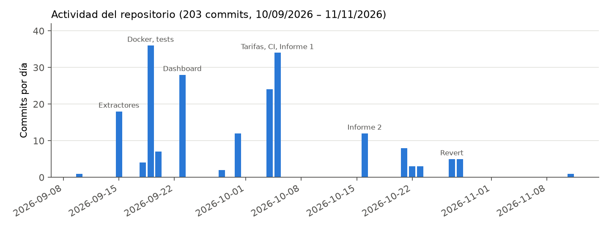
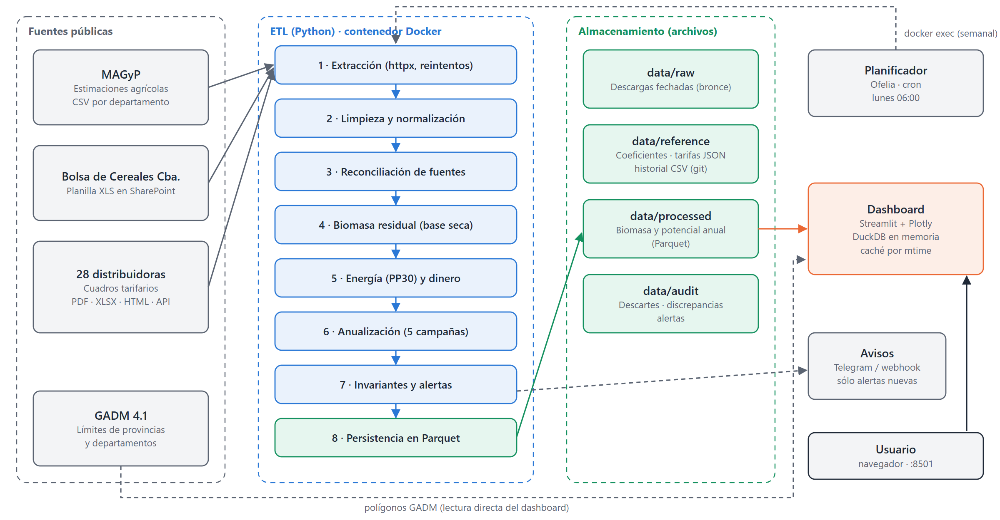
MAGyP · BCCBA
t de materia seca
cota superior sostenible
ficha APL PP30
Ley 27.424
9.641 t MS → 4.821 t retirables → 4,82 GWh/año → ≈ 31 equipos PP30 → ahorro $390 M + crédito $239 M = ≈ $629 millones por año. Reproducido a mano y codificado como prueba automatizada.
AAAAMMDDhhmmss_fuente# etl/extractors/http_retry.py — espera exponencial for attempt in range(1, max_retries + 1): try: response = client.request(method, url, **kw) except RETRYABLE_ERRORS: time.sleep(delay) delay = min(delay * 2, MAX_RETRY_DELAY) continue if response.status_code not in retry_status: return response time.sleep(_retry_after(response, delay)) delay = min(delay * 2, MAX_RETRY_DELAY)
429 · 5xx → 2, 4, 8… s (tope 60 s) · respeta Retry‑After · segunda pasada · último dato válido
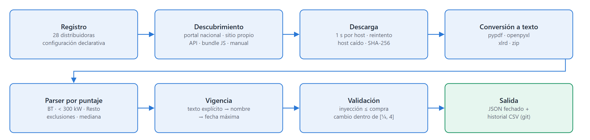
API de Astro (EPE) · bundle de Angular (EPEC) · visor PDF (APE) · tarjetas sin nombre (EJESA)
Compra × mediana observada (0,913). Error acotado entre −12 % y +4 %.
# Fechas de 8 dígitos frente a expedientes # "IF-2025-20821026" no es una fecha for m in re.finditer(r"(?<!\d)(\d{8})(?!\d)", name): token = m.group(1) d, mo, y = int(token[:2]), int(token[2:4]), int(token[4:]) if 1 <= d <= 31 and YEAR_MIN <= y <= YEAR_MAX: candidates.append(_ym(y, mo)) y2, mo2, d2 = int(token[:4]), int(token[4:6]), int(token[6:]) if 1 <= d2 <= 31 and YEAR_MIN <= y2 <= YEAR_MAX: candidates.append(_ym(y2, mo2))
«SD» se conserva como faltante, nunca como cero. Se elimina la duplicación por producto cartesiano.
POL‑MISSING‑001
Léxica, puntos, abreviaturas y alias acotados por provincia. Taxonomía de 49 cultivos con fallo inmediato.
POL‑GEO‑001 · POL‑CROP‑001
Mayor producción; ante empate, MAGyP. Orden estable. 3.298 descartes a auditoría.
POL‑SOURCE‑001
Promedio de las 5 últimas campañas completas; la ausencia cuenta como cero.
POL‑PERIOD‑001
Resultado: 110.819 registros históricos válidos (1969/70–2025/26) y 2.421 registros anuales por provincia × departamento × cultivo, con contratos de columnas documentados.
Pruebas en CI → invariantes que impiden publicar → alertas → avisos por Telegram o webhook (solo alertas nuevas)
| Error detectado | Lección |
|---|---|
| Producción ×2 o ×4 en Córdoba | Auditar totales contra la fuente |
| «SD» convertido en 0 | Un faltante no es un cero |
| Humedad descontada dos veces | Declarar la base de cada magnitud |
| Tarifa mayorista leída como minorista | El contexto semántico importa |
| «Hasta 800 kWh» leído como precio | Validar unidad y plausibilidad |
| Expedientes leídos como fechas | Heurísticas con rangos |
| Datos viejos en el tablero | Invalidar la caché por fecha |
| Servicio | Función |
|---|---|
etl_worker | Contenedor donde corre el ETL |
scheduler | Ofelia: cron semanal |
dashboard | Streamlit :8501, datos en solo lectura |
etl_pipeline | Ejecución manual a demanda |
Imagen Docker en dos etapas: la capa de dependencias se reutiliza mientras pyproject.toml no cambie. Usuario sin privilegios y configuración por variables de entorno.
# config/schedule.ini — lunes 06:00 [job-exec "etl-biomasa"] schedule = 0 0 6 * * 1 container = biomasa_etl_worker command = python -m etl.pipelines.run_etl
Las tarifas cambian como máximo una vez por mes; cada corrida insume unos 30 min de descargas a servidores públicos.
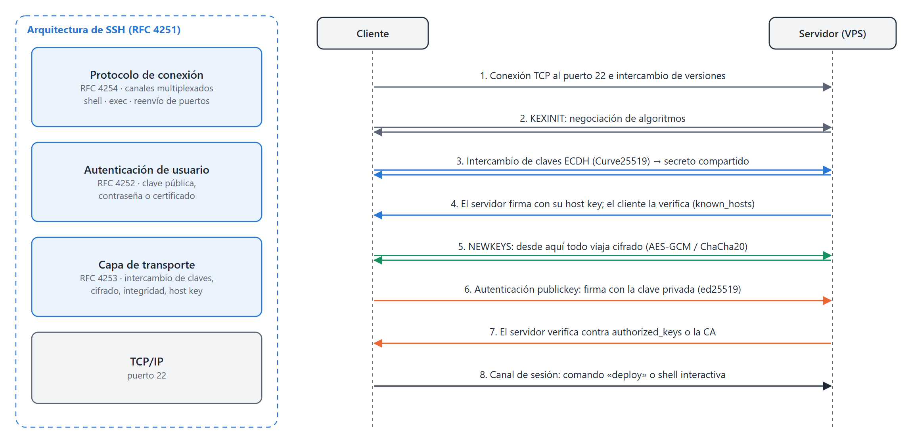
Diffie‑Hellman (ECDH Curve25519): un secreto compartido que nunca viaja por la red.
Firma con la host key, verificada contra known_hosts: impide al intermediario.
Firma con la clave privada Ed25519, verificada contra authorized_keys. Sin contraseñas.
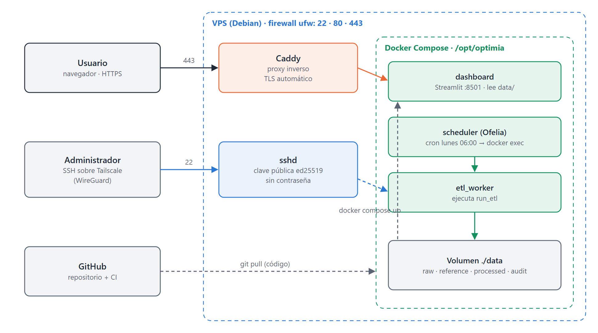
# authorized_keys: la clave solo puede desplegar command="/opt/ops/bin/deploy-gate <proyecto>",restrict ssh-ed25519 AAAAC3Nza… deploy@<proyecto>
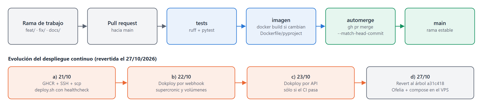
--match-head-commit: si llega un nuevo commit mientras corren las pruebas, no se fusiona.
Tres diseños de despliegue continuo explorados y revertidos (−5.764 líneas): la solución más simple que cumple los requerimientos.
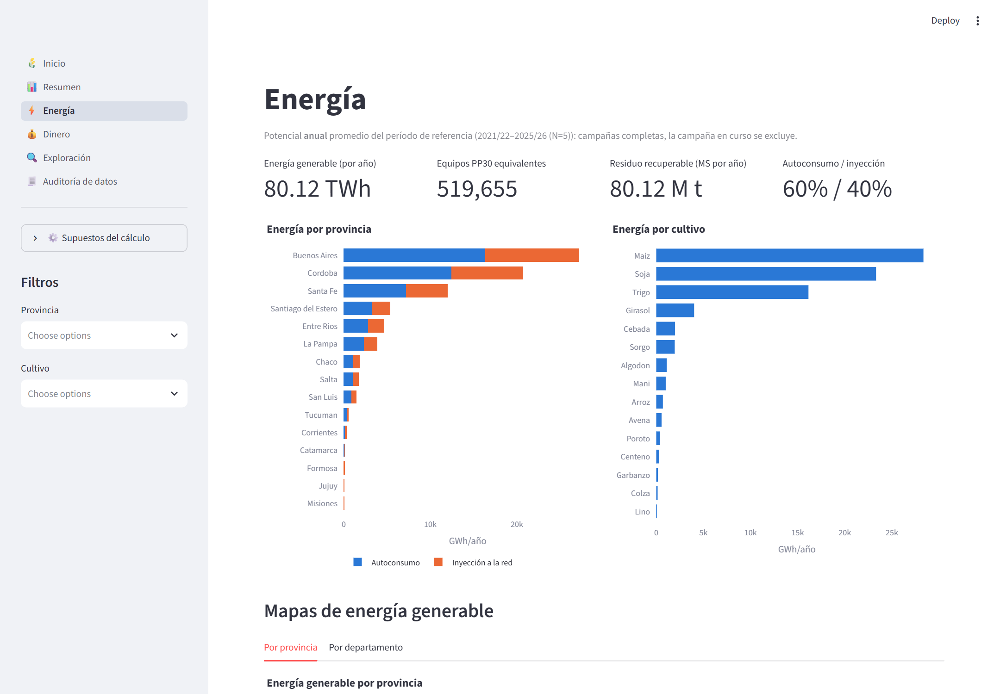
Energía por provincia y cultivo
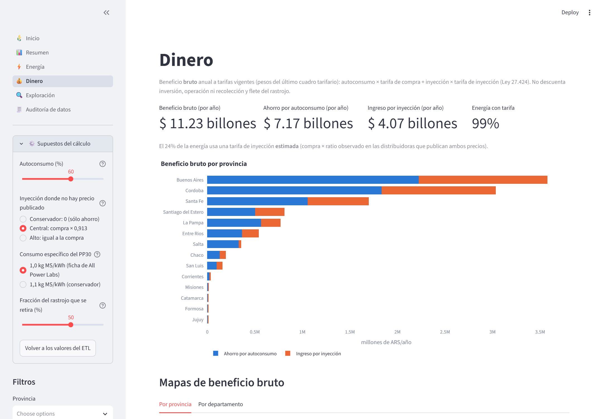
Supuestos ajustables sin recalcular el ETL
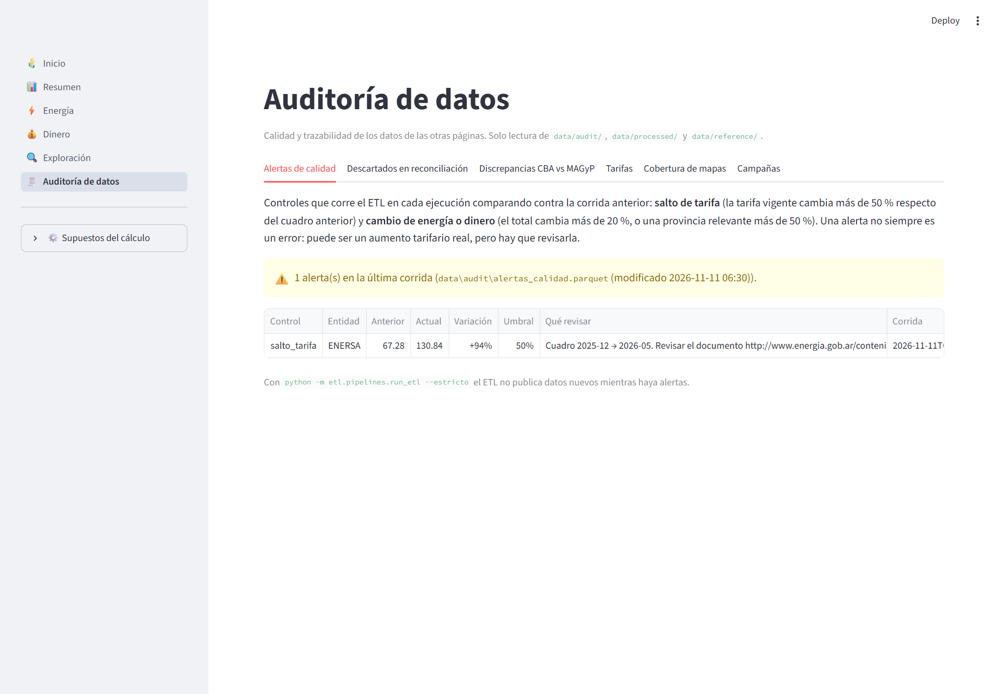
Auditoría: alertas, descartes y discrepancias
El 74,8 % se concentra en Buenos Aires, Córdoba y Santa Fe; maíz, soja y trigo aportan el 84,6 %. Departamento líder: Río Cuarto (2,91 TWh/año).
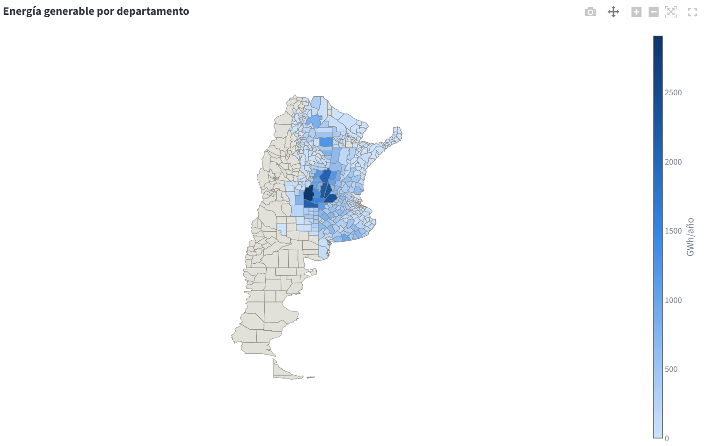
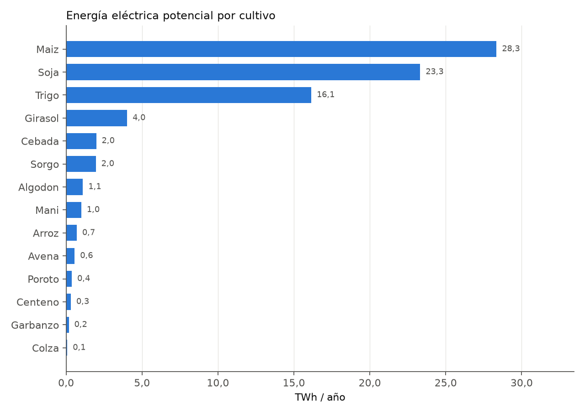
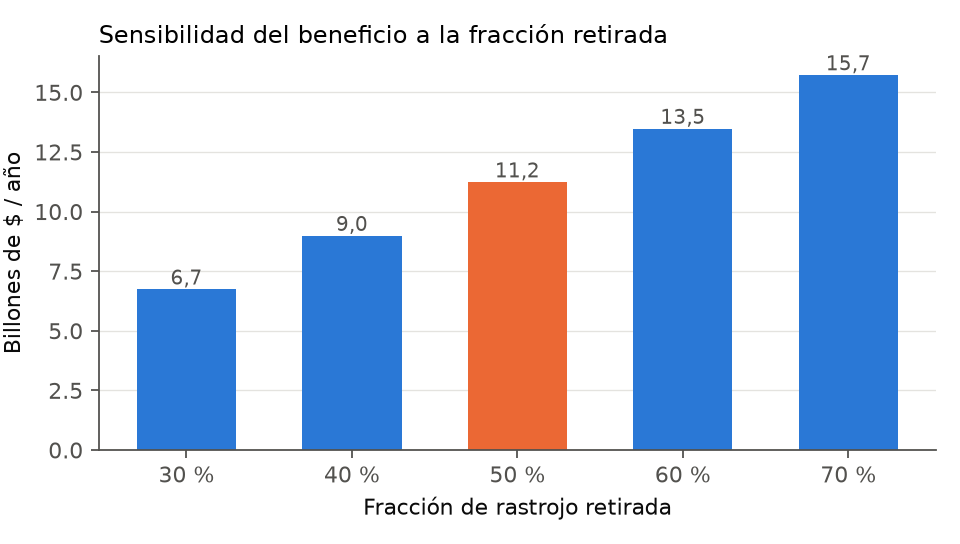
| Supuesto | Efecto en el beneficio |
|---|---|
| Fracción retirada 30–70 % | 6,7 a 15,7 billones |
| Escenario de inyección | −11 % a +1 % |
| Autoconsumo | −8 % a +5 % |
| Consumo específico 1,0 → 1,1 | hasta −10 % |
Todos los supuestos son ajustables en el tablero y están documentados con su fundamento bibliográfico.
La mayor parte del código extrae y valida; el cálculo es lo simple.
Un número verosímil y equivocado: contrastar con la fuente y convertirlo en prueba.
Decisiones con identificador, documentos con hash y descartes visibles.
La transición energética también necesita información confiable y actualizada. Este trabajo construye la infraestructura de datos que la hace posible.
Preguntas · Marco Ferro · OPTIMIA‑HV